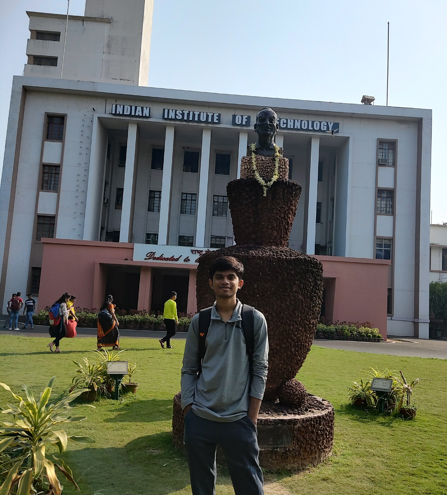

About Me
Hey there! I’m Aryan Bhatiya. I started my journey at the Indian Institute of Technology, Kharagpur, but soon realized that I wasn’t passionate about what I was studying, so I decided to drop out and follow what truly excites me.
What I'm Into
I’m really into Web Development, Search Engine Optimization (SEO), and anything tech-related. I love exploring how the internet works and how things can be optimized to reach more people and make an impact.
A Little About Me
- Curious — always wanting to learn and understand more.
- Energetic — I put my all into what I do, no matter how big or small.
- Excited and optimistic — always looking forward to new challenges.
- Eager to learn — whether it’s tech or anything else that sparks my interest.
What’s Next
Right now, I’m looking for some hands-on experience and opportunities to learn more through real projects. If you’re working on something cool or need a passionate person on your team, let’s talk!